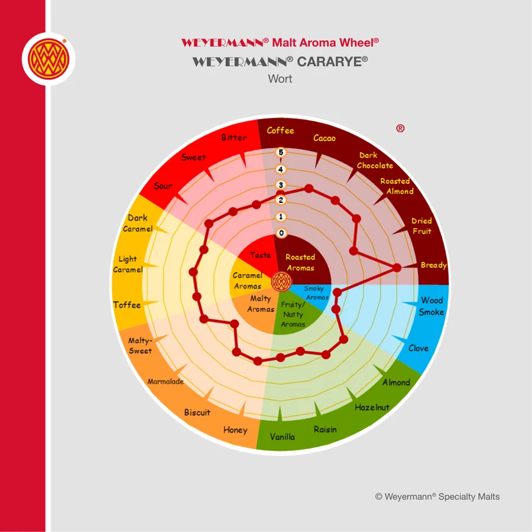

Weyermann CARARYE: caramel malt from rye
CARARYE is a dark caramel malt built on German rye. It gives colour, mouthfeel and a complex roasted sweetness in small doses. Here is how to read its spec and where it earns its place.

Rye, caramelised
CARARYE starts as German rye, malted and then stewed so the starch inside each grain turns to sugar, before roasting caramelises it. Rye caramelises into something more complex than barley does. Weyermann pushes this one well into the brown range.
Like every caramel malt it has no enzymes left. It is a flavour and colour malt. It also has no husk, which affects milling more than mashing at the doses you will use.

Reading the spec sheet
- Colour: 150 to 200 EBC (57 to 75.9 Lovibond). Dark for a caramel malt. A few percent moves a pale beer into copper.
- Extract: 74% minimum, dry basis.
- Moisture: 6.5% maximum.
- Maximum addition: up to 15%.
- Enzyme activity: none.
The colour range is wide, 50 EBC from top to bottom. On a 5% addition that spread is visible in the glass, so if colour matters for a brand, check each new lot against the certificate of analysis and adjust the dose.
What it tastes like
The aroma wheel above shows a broad profile. Weyermann lists bread first, then coffee and dark chocolate, with dried fruit behind them and a soft, velvety feel in the mouth. The bread note is the rye speaking. The coffee and chocolate come from the roasting. You get them without the harsh, ashy edge of a true roasted malt.
That makes CARARYE useful in places a roasted malt would be too much: a rye IPA that needs some colour and spice, or a stout that wants extra body and a softer finish.
The mouthfeel point is worth testing for yourself. Brew two small batches of the same pale beer, one with 4% CARARYE and one with 4% of a barley caramel malt of similar colour. Taste them side by side at the same temperature. The rye version usually feels rounder on the tongue even when the gravities match.
How much to use and how to mash it
CARARYE goes into the mash with the base malt and needs nothing special. Its sugars and colour dissolve in any normal infusion.
- 2 to 5%: colour, a spicy bread note and fuller mouthfeel in an IPA or pale beer.
- 5 to 10%: roggenbier and dark rye beers, where rye is the point.
- 10 to 15%: imperial stout and big multigrain beers.
Pair it with pale rye malt when you want rye flavour throughout. Unlike the caramel version, pale rye malt brings a lot of gum, which is where lautering trouble starts. Keep the total rye share in check if your lauter tun is shallow.
A worked grist: rye IPA, 1,000 litres
For a 1,000 litre brewpub batch at about 15 °P with a brewhouse yield near 75%.
- Pale ale malt: 216 kg (80%)
- Pale rye malt: 32.4 kg (12%)
- CARARYE: 13.5 kg (5%)
- CARAPILS: 8.1 kg (3%)
- Total: 270 kg (100%)
Hop it as you would any West Coast style IPA. Expect a copper beer with a peppery bread note under the hops and a softer mouthfeel than an all-barley grist.
Why 5% CARARYE and not 10%? At 10% the coffee and chocolate begin to argue with citrus hops. Working out that kind of trade-off before the brew rather than after the tasting is what grist design is for.
Using CARARYE in India
Unopened, Weyermann quotes at least 24 months of shelf life in dry storage between 0 and 30 °C. In a hot Indian storeroom, treat 30 °C as a limit you are working against: keep sacks on pallets, out of the sun and sealed once opened. A dark caramel malt that picks up moisture loses its crunch and its aroma fades.
Here is the floor detail that catches people. Rye kernels are smaller and slimmer than barley. A two-roll mill gapped for barley can let some pass through whole. Pull a sample from the grist case and look for intact kernels. If you see them, mill the rye separately on a tighter gap.
If you cannot get it, a dark barley caramel malt gives similar colour but loses the rye spice. A small dose of chocolate rye malt plus a mid caramel malt gets closer. The Weyermann malts guide lists the options.
Common questions
Is CARARYE the same as rye malt?
No. Rye malt is a base-type malt with enzymes. CARARYE is caramelised rye with no enzymes, used for colour, flavour and body.
How much CARARYE should I use?
Up to 15% is Weyermann's limit. Most IPAs use 2 to 5%, with higher rates kept for roggenbier and imperial stout.
What does CARARYE taste like?
Dried fruit, bread, coffee and dark chocolate, with a soft, velvety mouthfeel. It is roasty without the harshness of a true roasted malt.
Does CARARYE cause stuck mashes?
At normal doses it rarely does. Lautering trouble with rye usually comes from large amounts of pale rye malt, not the caramel version.